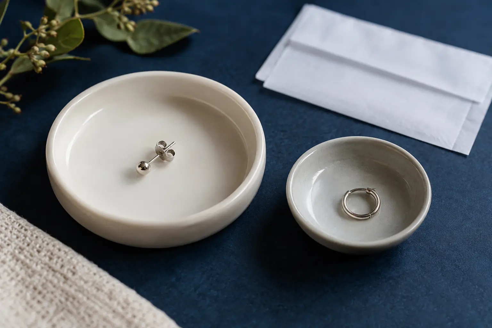

Pirmas auskaras: papuošalo medžiaga, dydis ir dokumentuota informacija
Autorius: Madbeauty redakcija · Numatyta 2026 m. gruodžio 18 d. 16:00 (Lietuvos laiku)
Sužinokite, ką užrašyti apie pirmą papuošalą, kaip atskirti medžiagos pavadinimą nuo ją pagrindžiančios informacijos ir kodėl dydis vertinamas pagal konkrečią vėrimo vietą.

Renkantis pirmą auskarą neužtenka vien medžiagos pavadinimo, pavyzdžiui, „titanas“. Užrašykite tikslų gaminį, ką pardavėjas deklaruoja apie jo medžiagą, kokį dokumentą pateikia ir ką tas dokumentas apima. Dydį bei formą reikia vertinti pagal konkrečią vėrimo vietą ir išdėstymą. Ši kortelė padeda palyginti, kiek aiški informacija; ji negarantuoja papuošalo saugumo ar individualaus tinkamumo.
Medžiagos deklaracija
Medžiagos pavadinimas yra pradžia, o ne visa patikros išvada. Palyginkite, ar produkto aprašyme nurodyta konkreti medžiaga, jos žymėjimas ar markė, paviršiaus danga ir gaminio modelis. Jei turite dokumentą, pasižymėkite jo pavadinimą, išdavėją, datą ir tai, kuriam gaminiui ar partijai jis taikomas. Nepriskirkite dokumentui daugiau, nei jame parašyta.
- Gaminys: gamintojas ar tiekėjas, modelis ir tikslus pavadinimas iš etiketės arba pasiūlymo.
- Deklaruota medžiaga: nukopijuokite tikslų užrašą; jei nurodyta, pasižymėkite markę ar lydinį, dangą ir paviršiaus aprašą.
- Pagrindžianti informacija: dokumento pavadinimas, išdavėjas, data ir nurodytas gaminys ar partija. Jei dokumentas nepateiktas, pažymėkite „nepateikta“ — tai savaime neįrodo, kad gaminys netinkamas.
- Sujungimas ir forma: pasižymėkite, kas nurodyta apie užsegimą, sriegį ar kitą jungtį. Skirtingi aprašai nėra tas pats produkto variantas.
Association of Professional Piercers pradinių papuošalų rekomendacijoje aptariami dokumentai, dydis, forma, paviršius ir sujungimas. Tai profesinės asociacijos rekomendacija, ne Lietuvos įstatymas, saugumo garantija ar Madbeauty patvirtinimas. Skaitykite rekomendaciją apie pradinius papuošalus.
Dydis ir pasirinktai vietai tinkamumas
„Dydis“ gali reikšti kelis skirtingus matmenis. Priklausomai nuo papuošalo formos, pasiūlyme gali būti nurodomas strypelio storis ir ilgis arba žiedo vidinis skersmuo. Vien skaičius be matmens pavadinimo ir pasirinktos vietos nedaug pasako. Nesirinkite dydžio pagal universalią internetinę lentelę ar vien kito žmogaus papuošalo pavyzdį.
Prašykite, kad teikėjas paaiškintų, kokį konkretų gaminį ir matmenis siūlo pasirinktai vietai ir kas juos įvertina. Jei jau žinomas pasirinktas modelis, įrašykite jo matmenis į dokumentų kortelę. Taip vėliau galėsite patikrinti, ar kalbama apie tą patį gaminį, o ne vien panašų pavadinimą.
Produkto informacija
Papuošalas gali būti įtrauktas į vėrimo kainą arba skaičiuojamas atskirai. Palyginti verta konkrečią eilutę meniu, o ne daryti išvadą vien iš metodo ar medžiagos pavadinimo. Peržiūrėtuose 2026 m. spalio 9 d. pavyzdžiuose Jo Mi nurodė, kad į kai kurių vėrimų kainą įtrauktas paprastas titaninis papuošalas. ODA klinikos meniu įvardijo „Studex“ ir „Inverness“ sistemas, tačiau peržiūrėtas aprašas neleidžia spręsti, ar konkretaus papuošalo kaina įtraukta. Tai dviejų atskirų teikėjų meniu pavyzdžiai, ne visų studijų taisyklė.
Palyginimui peržiūrėkite Jo Mi auskarų vėrimo meniu ir ODA klinikos auskarų vėrimo meniu.
- Ar papuošalas įtrauktas į nurodytą kainą, ar pasirinktas atskirai?
- Koks tikslus įtrauktas gaminys ir ar jį galima atskirti nuo bendro medžiagos pavadinimo?
- Jei vėliau numatomas keitimas, ar mokama už gaminį, už atliktą paslaugą, ar už abu?
Papuošalo pakeitimas: metodo paskirtis ir konkreti paslaugos apimtis
Papuošalo įsigijimas ir jo pakeitimas yra atskiros pasiūlymo dalys. Meniu gali nurodyti konkrečią keitimo paslaugą, tačiau tai nepasako, kad ji įtraukta į pradinio vėrimo kainą ar siūloma visur. Viename peržiūrėtame Jo Mi meniu kotelio keitimas išskirtas atskirai. Kortelėje pasižymėkite, ar keičiamas pats papuošalas, ar teikėjas taip pat atlieka keitimo paslaugą, ir kokia jos nurodyta apimtis. Šis gidas nepateikia keitimo namuose instrukcijos.
Trumpa palyginimo taisyklė: sutikrinkite gaminį, deklaruotą medžiagą, dokumento taikymo sritį, matmenis pagal pasirinktą vietą ir tai, kas įskaičiuota į paslaugą. Jei vieno lauko atsakymo nėra, palikite jį nepatvirtintu, o ne užpildykite prielaida. Ši papuošalo kortelė papildo platesnį „Auskarų vėrimo gidas: vieta, papuošalas, eiga ir priežiūros planas“.
Procedūrų aprašai kataloge: Papuošalo pakeitimas. Miestą ir realaus teikėjo pasiūlymą pasirinkite kataloge, kai tokia pasiūla pateikta.
Susiję gidai
Šaltiniai
- NVSC · grožio paslaugų sauga, 2026-09-17 · nvsc.lrv.lt
- NHS · infekcija po auskarų vėrimo · www.nhs.uk
- NVSC · teikėjo pasirinkimas ir instrukcijos · nvsc.lrv.lt
- Jo Mi: vėrimo meniu su įtrauktu papuošalu · jomitattoo.lt
- ODA klinika: vėrimo apimtis, atskiri papuošalai ir laikas · odaklinika.lt
- Association of Professional Piercers: initial jewellery · safepiercing.org
- Association of Professional Piercers: piercing guns · safepiercing.org